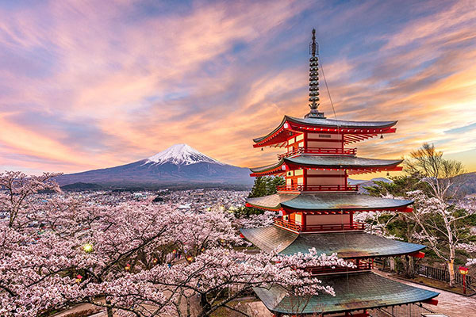

Tokio
Tokio (東京都 Tōkyō-to?, lit. «capital del este»; pronunciación japonesa: Acerca de este sonido [toːkʲoː] ) oficialmente Metrópolis de Tokio, es la capital de facto de Japón, ubicada en el centro este de la isla de Honshu, concretamente en la región de Kantō. En conjunto es una de las 47 prefecturas de Japón. Es el centro de la política, economía, educación, comunicación y cultura del país. Cuenta también con la mayor concentración de sedes corporativas, instituciones financieras, universidades y colegios, museos, teatros, establecimientos comerciales y de entretenimiento de todo Japón.
Con una población que supera los 40 millones de habitantes, se subdivide en 23 barrios (区 -ku); 26 ciudades (市 -shi); un distrito (郡 -gun) subdividido en tres pueblos (町 -chō o -machi) y una villa (村 -son o -mura); y cuatro subprefecturas (支庁 -shichō) subdivididas en dos pueblos y siete villas, que representan a varias pequeñas islas al sur de Honshu que se extienden más allá de 1800 km de Shinjuku, capital de la metrópoli y sede de la gobernación. El centro de Tokio, con sus 23 barrios, ocupa un tercio de la metrópoli, con una población cercana a los 13,23 millones de habitantes; esta área es lo que se conoce internacionalmente como la ciudad de Tokio. En su área metropolitana viven más de 40 millones de habitantes, lo que la convierte en la segunda mayor aglomeración urbana del mundo detrás de la de Guangzhou, en China. En 2015 fue elegida como la ciudad más segura del mundo por el periódico The Economist.
A pesar de que Tokyo es la romanización más común del nombre en japonés, el nombre de la ciudad es Tokio en español y otros idiomas —entre ellos el alemán y el neerlandés—. En inglés y otros idiomas se escribe Tokyo, aunque antiguamente también se escribía Tokio. En el pasado, la ciudad se denominaba como Tokei, Edo o Yedo. El gentilicio de Tokio es tokiota. La ciudad fue sede de los Juegos Olímpicos de 1964 y los Juegos Olímpicos de 2020 (que originalmente estaban programados para realizarse del 24 de julio al 9 de agosto del 2020, pero debido a la pandemia por coronavirus de 2020 tuvieron que ser pospuestos al año siguiente y fueron celebrados del 23 de julio al 8 de agosto de 2021).